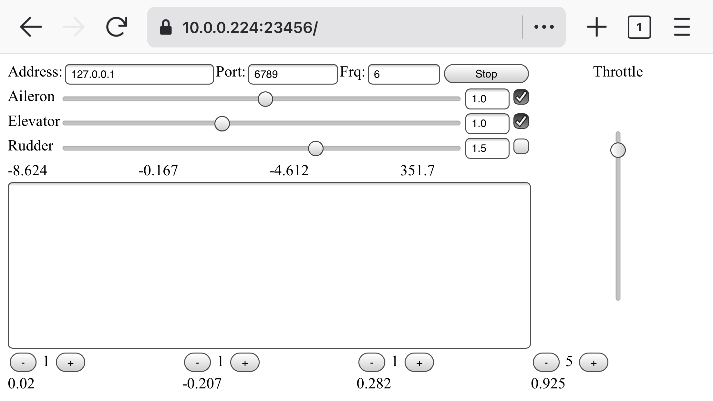
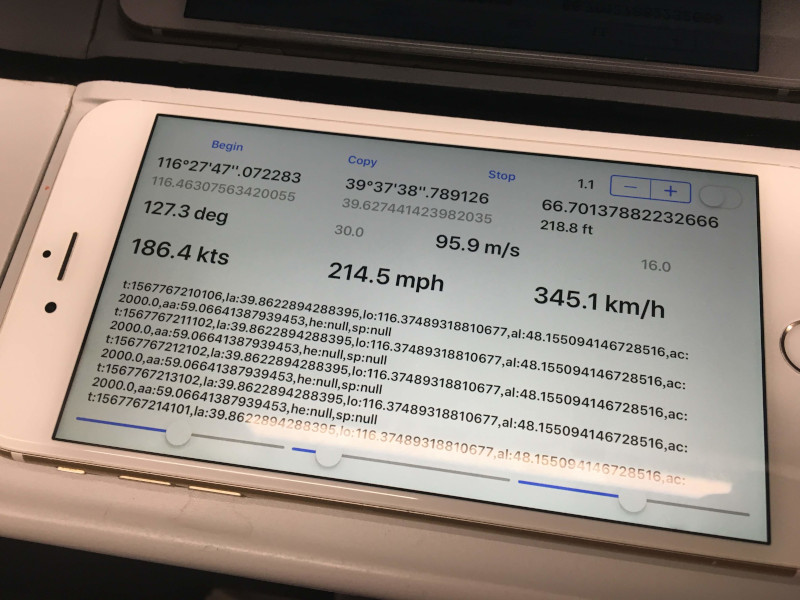

ngshare
A backend server for nbgrader’s exchange service.
Team KALE: Kevin Rong, Abigail Almanza, Lawrence Lee, Eric Li
Senior Design Project at UC Davis
Project Introduction Video:

Youtube Video Demo:

Screenshot of a few pages of ngshare (most of this project is backend, though):

shierquan
An easy event publication & management platform
Visit: 中文 / English (static texts only) / 日本語 (static texts only) / Chinese homepage archive
Django + BootStrap + PostgreSQL + Apache
Major contributers: lxylxy123456, David Ma
Chinese home page:
Chinese club info page:

English home page:

Japanese home page:

container
A file storage service
Visit: https://c.ercli.dev/ (any username / password combination will work)


chat-io
An instant messaging platform
Visit: https://ercli.dev/
(enter your name in “输入你的姓名”, click “进入对话”, then on the next page leave Session ID and Session Token blank, and click “进入对话” directly)


FGFS-Controller
An iOS app that controls a flight simulator (FGFS) on a computer.
Aileron, elevator, rudder, and throttle can be controlled.
Data are collected through accelerometer in the iOS device, and transmitted using UDP packets.

FGFSControllerWeb
A web app with similar functionality as FGFS-Controller above.
Screenshot:

Demo Video:

A new throttle control UI:

Receiver (made with pygame):

LocationTracker
An iOS APP that track the location of an iPhone
In cable car:

In high-speed rail:

In plane:

LocationTrackerWeb
A web app with similar functionality is available at: https://www.ercli.dev/ll.html or https://lxylxy123456.github.io/ll.html.
{kind=link}
hackdavis2019
Hack Davis 2019 project
Authors: lxylxy123456, Yiling Chen, jingyizhu, wyr
https://savemyschedule.ercli.dev/

lxylxy123456.github.io
My homepage (this website)